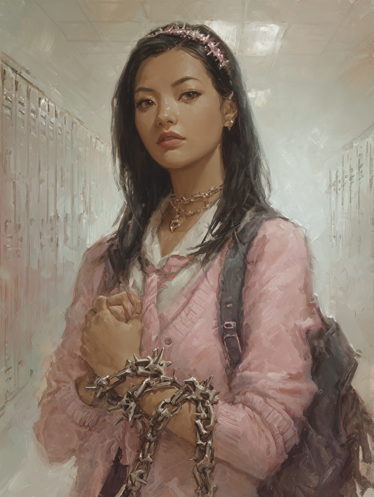

Kelly
Her birth was prophesied. She knows that part — some weirdo told her. She knows it involves finding someone. She is not, today, totally clear on who. What she is clear on: there is a splintered black phone in her bag from her order, the rose gold one is from her parents, and she had a trig test this morning that has been mysteriously “taken care of.” Tonight she goes out alone for the first time.
Ratings — pick a line ✓
help out
protect someone
Trackers
Chosen Moves
Weapon & Gear
A length of jointed bone, spiked, that Thomas's order delivered to her about a year ago. Wraps around an arm for a guard, lashes out in an arc. Bit a fey prince through to the bone of his arm. Once protected her shoulder from a mutated werewolf's jaws.
No worn armour — Invincible covers it.
- cold iron binding net — fey can't touch it; drains their power
- silver six-shooter — low-tech, runs near fey magic
- 8 silver bullets
- binding ritual components — 6-hour cast, within ~1 mile of Oberon
- splintered black phone (Order issue)
- rose gold cell phone (parents)
Her Fate
Background — what we know so far
Relationships
Session Log — Oberon's Hunt, a one-shot
Studying for tomorrow's trig test. Falling asleep. The headache comes in — the feeling of every drop of air pulled from her body, then it's gone. The splintered black phone rings: first solo mission, 10 AM, outside your school. We owe a favour. Trig test is handled.
Destiny's Plaything · 6− Marks experience. Vision is a known one — a recurring sensation, not a new symbol.
Walks out of class without a backward glance. Climbs into a tactical van with no windows. Recognises both men inside — the older one (Thomas) who came with the Bone Chain a year ago, and his apprentice (James). She knows who they are; she does not, particularly, want to talk to them. Spends the entire four-hour drive on her phone.
Wide open fields. A house in the middle distance. Steve hands envelopes and explains: Prince Oberon, nephew of Queen Rosalind, has been mutating werewolves into werewolf-vampire hybrids to overthrow her. He has until midnight to ritually transform a mass of them; she has until midnight to stop him. Gear granted: cold iron binding net, silver six-shooter, eight silver bullets, a binding ritual that needs six undisturbed hours within a mile.
The fey magic thickens as they cross the fields. Modern electronics begin to die at the perimeter — which is why the van couldn't approach. House, barn 500 ft northeast, lake to the northwest. They circle in from the back of the barn.
Tries to climb to the hayloft using the Bone Chain as a grappling line. Distracted — still rattled from the van — she'd put her personal phone in her pocket instead of her bag. As she climbs, it slips out and lands on a ledge below.
Act Under Pressure · 7–9 · hard choice Goes back for the phone. The hook comes loose; she retrieves the rose-gold phone and the climb is over. Stuck six feet up on the wrong ledge with the chain-grapple ringing on the ground at Thomas's feet. Jumps down, startles James on the landing.
Puts her ear to the side door of the barn.
Read a Bad Situation · 13 · hold 3 Heavy, deep breathing on the far side — something sleeping. The side door is ajar, used, won't make noise. The biggest threat is whatever is breathing in there.
Inside: a steel cage holding dozens of werewolves. A stench like open-sore mange that isn't coming from them. A howl — two larger creatures step into the back doorway, blocking the last of the sunlight. Red eyes, elongated fangs. Mutated.
Act Under Pressure · pass Resists what would have been overwhelming fear.
One of the mutants closes the distance faster than anything she's seen and bites for her arm. The Bone Chain — wrapped over the forearm as a guard — takes the bite. No harm. She has it grappled. She drags it backwards into the still-falling sunlight.
Act Under Pressure to keep it in the sun · 7–9 The creature screams; red marks bloom on its skin like a vampire's burn. It manages to slip past her guard and sink its teeth into her — small wound, but enough to register: this thing is partly vampire, and people can be turned. Takes 2 harm, reduced to 0 by Invincible's 2-armour.
Throws the cold iron net. The mutant scrambles backward and tangles in the chains between the stalls and the central cage.
Investigate a Mystery · “what happened here?” The sunlight burns are healing — slowly. Most werewolves heal supernaturally fast; this one doesn't. Sunlight is a weakness for the mutants the way silver is a weakness for werewolves. Confirmed: vampire mutation.
Moves in to put the tangled mutant down.
Kick Some Ass · 7–9 The chain lifts and the wolf has healed just enough. It bolts past them, going for James. Thomas spends Fortunes to be where he's needed, calls out, and James plants a silver crossbow arrow in its throat for two harm. Down.
Thomas uses Magic to light his oiled walking-stick and shove it into the dry hay. The barn goes up fast. As the back of the barn lights, Kelly hears a cough — turns — sees a pale figure chained to the wall, drained of blood. There is no time to save it. The magic's problematic side effect: they killed something that could have helped them.
She gets the cage open and forces the unmutated werewolves out into the field. They scatter in every direction, none of them with red eyes. Takes a burn on the leg through her armour. 1 harm.
A wide-winged bird with a long beak — that turns into a horse — descends. Behind it, a tall fey elf in a gold crown and breastplate, sword drawn. “You ruined everything.”
Kick Some Ass · 10+ · first strike Closes with the Bone Chain. His sword glances off — nothing for it to bite on Invincible. Her spikes sink into his arm. Blood sprays.
Kick Some Ass · 10+ (Thomas gives +1 forward.) She brings the Bone Chain down again — 4 harm. Oberon goes unstable. The bird-horse strikes at her, but in his current state it doesn't matter; it doesn't hurt.
Thomas one-shots the bird-horse with a Luck-spent 12 on his silver sword. Kelly raises the Bone Chain one last time.
Kick Some Ass · 10+ Oberon starts to bargain. She brings the chain down through his head. He doesn't finish the sentence.
Both of them on the ground, covered in his blood, the barn burning behind them. Queen Rosalind walks out of a portal with two fey attendants, applauding. Her people lift Kelly aside and retrieve Oberon's body and the magic he had been siphoning from the land.
To Kelly, she says: “If you ever want insight into your destiny, feel free to give us a call.” The portal closes. Steve arrives twenty minutes later in the van.
Sneaks back into the house covered in fey-prince blood with a deep cut on her leg that will need a couple of stitches. The rose-gold phone is somewhere on a barn ledge, now somewhere in a pile of ash. The order will not be replacing it.